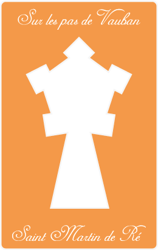
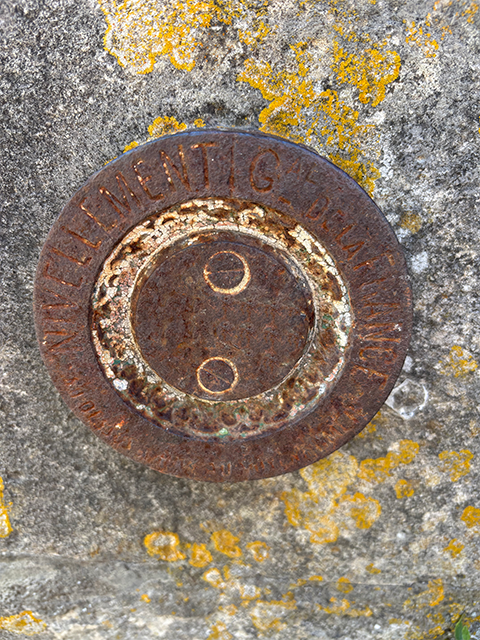

Quel nombre a disparu ?

Tentatives restantes : 4
L'Île de Ré avant les remparts, une terre vulnérable
Avant de devenir une forteresse de pierre, l’Île de Ré du XVIIe siècle est une terre de sel, de vignes et de marins, mais surtout un territoire profondément traumatisé par les guerres. Idéalement située face à La Rochelle, l'île subit de plein fouet les tensions religieuses et géopolitiques du royaume.
En 1627, le duc de Buckingham et la flotte anglaise y débarquent pour soutenir les protestants rochelais révoltés contre le roi Louis XIII. Le siège du premier fort de Saint-Martin (le fort de Toiras) est sanglant, et bien que les Français finissent par repousser les Anglais, la leçon est retenue : Ré est la porte d’entrée des invasions maritimes. À l’époque, Saint-Martin n’est qu’un gros bourg portuaire ouvert aux quatre vents. Sans protection efficace, l'économie insulaire et la sécurité du littoral restent à la merci de la moindre frégate ennemie.
Voici votre indice :
La troisième molette du cadenas est figée sur le chiffre 2.
Conservez-le précieusement pour espérer ouvrir le cadenas du coffre.